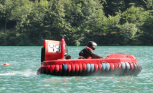
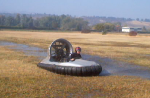
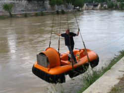
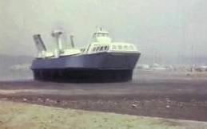
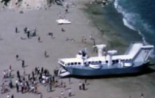

|
Scheda n. 21 |
|
| Denominazione: | T3 modificato |
| Tipo: | Bimotore, bielica (in origine monomotore, integrato) |
| Costruttore: | amatoriale, variante su progetto BBVehicles |
| Periodo di costruzione: | 2013 |
| Gonna |
Segmentata |
| Motorizzazione di spinta: |
Rotax 503, 500cc con aria forzata |
| Motorizzazione di sollevamento: |
Rotax 277, 250cc con aria forzata |
| Avviamento: |
a strappo |
| Utilizzo: |
diportistico |
| Spinta: |
120 Kg |
| Carico utile max: | 240 Kg |
| Pressione max al cuscino: | 75 mmH2O |
| Dimensioni appross.: metri | 3,8 x 1,9 |
| Peso a vuoto: | 250 Kg |
| Vel. max su acqua: |
n.d. |
| Particolarita' costruttive: |
ventola di spinta diam. 100 cm. |
| Note: trasportati |
3 adulti |
| Funzionante: | Si |
| Esistenza alla data 2014: | Si |

|
Scheda n. 22 |
|
| Denominazione: | Exprit |
| Tipo: | Bimotore, bielica |
| Costruttore: | amatoriale, su progetto Prandi |
| Periodo di costruzione: | 2000 |
| Struttura: |
Fiberglass + carbonio |
| Gonna |
Segmentata |
| Motorizzazione di spinta: |
Rotax 447cc con aria forzata - singolo carburatore |
| Motorizzazione di sostentamento: |
Simonini, 160cc |
| Avviamento: |
elettrico |
| Utilizzo: |
diporto/competizione |
| Spinta: |
71 Kg |
| Carico utile max: | 100 Kg |
| Pressione max al cuscino: | 50 mmH2O |
| Dimensioni appross.: metri | 3,3 x 1,8 |
| Peso a vuoto: | 140 Kg |
| Vel. max su acqua: |
n.d. |
| Particolarita' costruttive: |
Riduttore di giri anteriore con cinghia dentata. |
| Note: |
Riserva di galleggiamento +
pompa di sentina + batteria 17 Ah |
| Funzionante: | Si |
| Esistenza alla data 2014: | Si |

|
Scheda n. 23 |
|
| Denominazione: | Formula 50 |
| Tipo: | monomotore, monoelica, integrato |
| Costruttore: | amatoriale, variante su progetto BBVehicle |
| Periodo di costruzione: | 1990 con success. modifiche |
| Struttura: |
Fiberglass |
| Gonna |
Segmentata |
| Motorizzazione di spinta: |
Rotax 503, 500cc con aria forzata - singolo carburatore |
| Avviamento |
a strappo |
| Utilizzo: |
Competizione |
| Spinta: |
n.d. |
| Carico utile max: | 150 Kg |
| Pressione max al cuscino: | 56 mmH2O |
| Dimensioni appross.: metri | 3,2 x 1,9 |
| Peso a vuoto: | 160 Kg |
| Vel. max su acqua: |
n.d. |
| Particolarita' costruttive: |
ventola diam. 89 cm.- 4 pale |
| Note: |
monoposto |
| Funzionante: | Si |
| Esistenza alla data 2014: | Si |
|
Scheda n. 24 |
|
| Denominazione: | HK5-S |
| Tipo: | Monomotore, monoelica, integrato |
| Costruttore: | Hover Kit - Torino |
| Periodo di costruzione: | 1983 e successivi adattamenti |
| Struttura: |
Lega legggera |
| Gonna |
Segmentata |
| Motorizzazione di spinta: |
La serie nacque con fuorib. Volvo 3 cil. adatt. e rovesciato Attualmente: Rotax 503 500 cc. con aria forz. - singolo carburatore |
| Avviamento: |
a strappo |
| Utilizzo: |
Diporto |
| Spinta: |
n.d. |
| Carico utile max dichiarato: | 250 Kg |
| Pressione max al cuscino: | n.d. |
| Dimensioni appross.: metri | 3,3 x 1,85 x 0,90 |
| Peso a vuoto: | 120 Kg ca |
| Vel. max dichiarata: |
80 Km/ora |
| Particolarita' costruttive: |
Trasmissione a cinghie trapezoidali |
| Note: |
Riserva di galleggiamento in poliuretano |
| Funzionante: | Si |
| Esistenza alla data 2014: | Si |
|
Scheda n. 25 |
|
| Denominazione: | 512 – Nettuno Hov.Service, |
| Tipo: | Bimotore gemellato, integrato |
| Costruttore: | Canair Hovercr. inc. British Columbia ( Canada )
Mr.Fishlock |
| Periodo di costruzione: | 2000 ( importazione ) |
| Struttura: |
Fiberglass |
| Gonna |
A sacco con dita (
fingered bag ) |
| Motorizzazione: |
2 motori 4T asp. HondaCivic 2 x 125 Hp –
alimentati benzina |
| Avviamento: |
elettrico |
| Elica di spinta (soll. Integrato
) |
2 ventole 12 pale cad. |
| Utilizzo: |
Noleggio da diporto |
| Comandante |
com.te Sig. Panzanera |
| Carico utile max: | 12 persone incluso il
pilota (carico utile 1119 kg ) |
| Pressione max al cuscino: | 110 mmH2O appr. |
| Dimensioni appross.: metri | 6,96 x 3,63 (
in trasporto larghezza mt. 2,69 ) |
| Peso a vuoto: | 1300 Kg ca |
| Vel. max su acqua: |
36 nodi pieno carico |
| Particolarita' costruttive: |
Comandi : fly by wire |
| Note: |
Esemplare immatricolato in
Italia , ha prestato servizio all’isola d’Elba- attualmente nelle
Antille |
| Funzionante: | Si |
| Esistenza alla data 2013: | Si |

|
Scheda n. 26 |
|
| Denominazione: | Winner custom |
| Tipo: | Monomotore, integrato |
| Costruttore: | amatoriale, elaborazione su progetto Lauro Tuan |
| Periodo di costruzione: | 2007 |
| Struttura: |
Fiberglass |
| Gonna |
Segmentata |
| Motorizzazione: |
Rotax 503 500 cc con aria forzata - doppio carburatore |
| Avviamento: |
A strappo |
| Utilizzo: |
Esplorazione in acque
interne e assistenza |
| Spinta: |
n.d. |
| Carico utile max: | 160 Kg |
| Pressione max al cuscino: | n.d. |
| Dimensioni appross.: metri | 3,2 x 1,9 circa |
| Peso a vuoto: | n.d. |
| Vel. max su acqua: |
30 nodi |
| Particolarita' costruttive: |
Riserva di galleggiamento sufficiente, robusto e affidabile. |
| Note: |
In grado di decollare agilmente
dall’acqua a pieno carico |
| Funzionante: | Si |
| Esistenza alla data 2014: | Si |


|
Scheda n. 27 |
|
| Denominazione: | Naviplane N300-01 Baie des anges et N300-02 La croisette |
| Tipo: | Bimotore - Traghetto di linea |
| Costruttore: | SEDAM - Francia |
| Periodo di costruzione: | 1967 |
| Struttura: |
Lega leggera |
| Gonna |
Brevetto Bertin (
l’ing. Bertin fu il promotore anche dell’Aerotrain ) |
| Motorizzazione: |
2 turbine Turbomeca 1250 Hp |
| Autonomia: |
3 ore ( capacità serbatoi 4 tonn
) |
| Utilizzo: |
In servizio su Nizza – Cannes
- S.Tropez - Monaco – San Remo |
| Eliche di spinta: |
2 eliche aereonautiche tripala,
diametro 3,5 m , su 2 piloni fissi |
| Ventola di sollevamento: |
4 ventole con 11 pale diametro
1,9 m |
| Carico utile max: | 13 ton |
| Tipologia del carico: |
Fino a 90 passeggeri e 4
autovetture |
| Dimensioni appross.: metri | 23,3 x 11, 1 -
altezza 8 |
| Peso a vuoto: | 17 ton |
| Vel. max su acqua: |
120 km/h |
| Velocità di crociera: |
80 km/h |
| Particolarita' costruttive: |
L’intera impostazione è particolare ma una caratteristica
saliente
era la gonna Bertin che consentiva una notevole altezza sulle onde (
fino a circa 2 metri ) . Il Naviplane 01 aveva delle inusuali ruote retrattili mentre lo 02 poggiava su dei calcagnoli gonfiabili. |
| Note: |
Le 2 turbine di elicottero
avevano un
consumo di combustibile spropositato e di conseguenza antieconomico
specialmente nel periodo di crisi petrolifera. |
| Esistenza alla data 2011: | Per mancanza di commesse nel 1982 chiude SEDAM
abbandonando nel cantiere a Pauillac n.2 N300 e n.4 N102
successivamente rottamati per recupero metalli. |